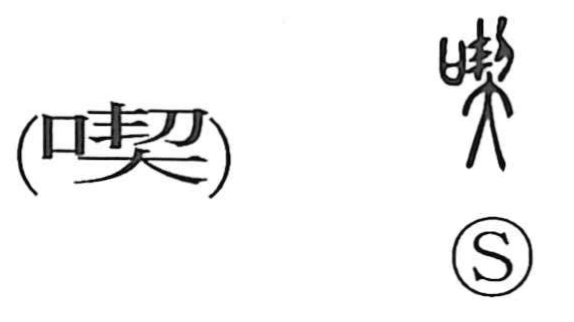

喫

Kun: kurau, kuu, nomu | On: kitsu
to eat ・ to drink ・ ingest ・ consume
Explanation
喫 is a phono-semantic character: the mouth element 口 gives the sense of eating and drinking, while 契 serves as the phonetic, guiding the on reading and linking it to the same series as 吃, which is read kitsu in Japanese. The word appears in use from the Tang period; Du Fu, in his poem ‘Sending off Li Xiaoshu,’ writes, “I face the wine but cannot 喫 it,” where 喫 means “to drink.” In Japanese it came to be used for both eating and drinking (kuu, kurau, nomu). The term likely began as an onomatopoeic imitation of the sound of swallowing or gulping, which naturally suited meanings tied to taking food and drink into the mouth.